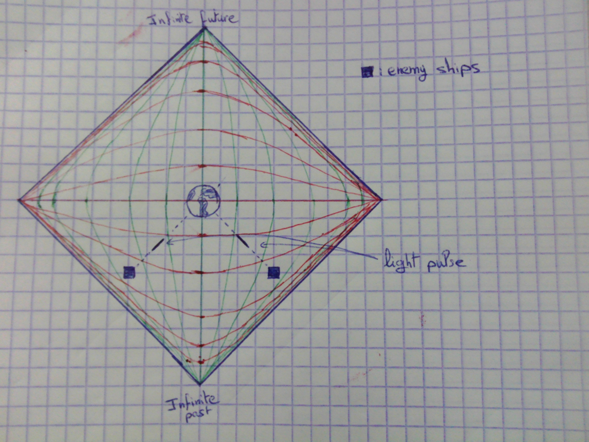
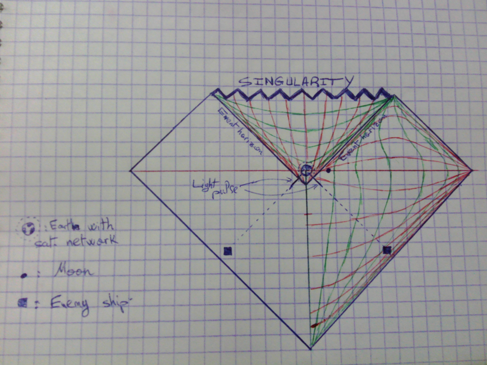

What would happen if aliens attack
Posted on jeu. 19 janvier 2017 in Physics
What's a kugelblitz, you say?
Let's start with the wikipedia definition:
In theoretical physics, a kugelblitz (German: "ball lightning") is a concentration of light so intense that it forms an event horizon and becomes self-trapped.
That's really the gist of it. In Newtonian gravity, mass is the source of gravitational field. In GR however, it would be the stress-energy tensor. Therefore, theoretially, it makes sense that it is possible to make a blackhole purely out of light. Granted, you would need a lot, and I mean a lot of light for that to be possible. It's clear that only a civilization that has mastered the laws of the universe would be able to consider building one.
Penrose Diagrams
A Penrose diagram is just a fancy Minkowski diagram. It's got worldlines, future light cones, past light cones, all the cavalry. It's just that Minkowski diagrams are hard to follow and understand when you introduce exciting things that warp space-time. The paths of light bend and the light cones' shapes change and it becomes all wibbly-wobbly . This is not the case with the Penrose diagram. Due to something called conformal transformation, (I'll have to learn more about this myself later, but not knowing what that is won't stop us from using the diagram.) light paths stay at 45 degree angles no matter the space-time geometry. This is very handy with stuff like event horizons and black holes.
Setting up the situation
Imagine a hostile alien civilisation that is indeed capable of building and weaponizing a Kugelblitz. They, for some reason, are pissed with us and they have a fleet of spaceships placed at equidistant (equidistant.. so grown up!) intervals around the solar system. These spaceships would collectively launch beams of light that would form a shell that converges on planet Earth. The energy from this pulse of light is enough to make a black hole, but it needs to move into a small enough region in space for the event horizon to actually form and the light to trap itself -and us with it-. Also, let's assume there is no obi wan to help us in this situation.
Earth is doomed
I will be (badly) drawing Penrose diagrams in order to describe the situation. Because I can only draw on 2 dimensional paper, I am going to use one dimension for time, and one for space, nothing unusual so far. the pulse will be represented as two converging beams coming from the left and the right, essentially trapping Earth in its one spacial dimension universe. Also, two enemy spaceships on each side of Earth would suffice to represent the sphere of spaceships that would be used in actual 3D space. If you think this is cheating, try to project a sphere (3 dimensions) onto a line (1 dimension). If you do the projection down the middle (not the special case of a tangent), you'll get two intersection points, hence two spaceships. Here's the what the situation would look like:

Before the pulse of light enters the solar system, things would be pretty normal on planet Earth.
Humanity will be completely unaware of its impending doom. The beams of light are moving at c,
obviously. Which is why they are at a 45 degree angles in the diagram.
When the beams have moved into a small enough region, the event horizon will form. Cutting Earth off
from the rest of the universe. Believe it or not, Earth would still not notice anything for a short
time after the event horizon forms. This is because the supposed force carrier of gravity would also
move at c, which is the same speed as the converging beams. Here's the Penrose diagram when the event
horizon forms.

Since the diagram would be symmetrical, and hand-drawing the lines of equal distances and times is difficult, I simply focused on the right side of the diagram. Drawing the flipped left side of the diagram is trivial and is left as an exercise for the reader. (I'm sorry but I've always wanted to be evil and write this somewhere)
The future light cone of Earth is already completely cutoff from the rest of the universe, the space-time geometry below the event horizon has changed (this is represented by space and time switching places in the diagram) and will only allow radially inward trajectories. This would mean that both Earth and the pulses will still inevitably fall towards the singularity. It's the end of humanity, It was fun while it lasted.
This is what happens when you introduce a black hole into a Penrose diagram. Intriguingly, the lines of constant space and time switch places, and space is "falling" towards the singularity at angles higher than 45 degrees. The best way I've heard it put is: Trying to avoid the singularity at this point, would be like trying to avoid next Monday. Yes, Mondays suck, but there's no way around them.
Also note that I extended the line of the event horizon to include a certain time before the true event horizon has formed. This is because there is a moment before the formation of true event horizon when there is not enough time for the planet to get out of the way even if it could move at the speed of light and miraculously 'phase' through the light pulses.
The Deus Ex Machina
Now imagine that all these events were happening in a movie, and the writer (like all good writers do) decided to introduce a Deus Ex Machina to save humanity.
This could be an infinitely strong Dyson sphere, which would appear from a higher dimension and completely cover the Earth-Moon system.
The Dyson sphere, even if infinitely strong, is still facing a tall task in order to truly protect the Earth.
- In order for it to have a chance, it would need to occupy a region of space that is bigger than the region where the light pulse first forms the event horizon. If the sphere itself is already below the horizon: Inevitable Death (More like a mathematical undefined form because of the sphere's infinite strength but I wouldn't bet my life on what that form means).
- The Dyson sphere needs to be light enough so that when the pulse hits it, the mass-energy increase of the sphere from the pulse is not enough to make the Schwarzschild radius too big and have the sphere fall below the resulting event horizon, if that happens : Inevitable death. - It actually needs to be so light that the mass-energy increase wouldn't give it enough gravitational pull to throw the rest of the solar system into chaos. Is it really survival if the solar system goes haywire? Who knows what might hit Earth when it becomes a shooting gallery?
If, the Dyson sphere satisfies all those, Earth might just make it. Hell, if we got a dyson sphere, we could use the energy from their own attack against them. And humanity lives happily ever after.
Epilogue
This 'scenario' is heavily based on a challenge question on the (Excellent) youtube channel:
PBS SpaceTime. In fact, I relied
entirely on the answer I wrote and sent a few weeks before I
started this blog. If you watch their challenge video, then you might have noticed that I did
not even mention Newton's shell theorem even if it was talked about in the channel. Maybe I'm
wrong, but I don't think Newton's shell theorem is relevant here at all to the reason Earth
doesn't notice anything until the last moment. I've already talked about how the (admittedly
theoretical) force carrier of gravity would also move at c because it's a local phenomenon so the
change in the geometry of space time would move along with the pulse of light. Furthermore, LIGO
detected gravitatinal waves directly for the first time just last year, and I'm pretty sure they
propagate at c. I believe that makes my claim stronger, but please notify me if you have an
alternative explanation, or a clarification.